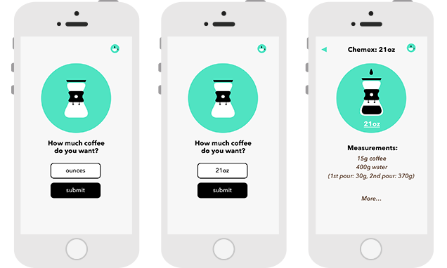

We wanted to find a way to pre-program the ratios
for coffee grounds and water so that you could choose your brew method,
say how much coffee you wanted, and then get the correct measurements of
each ingredient.
